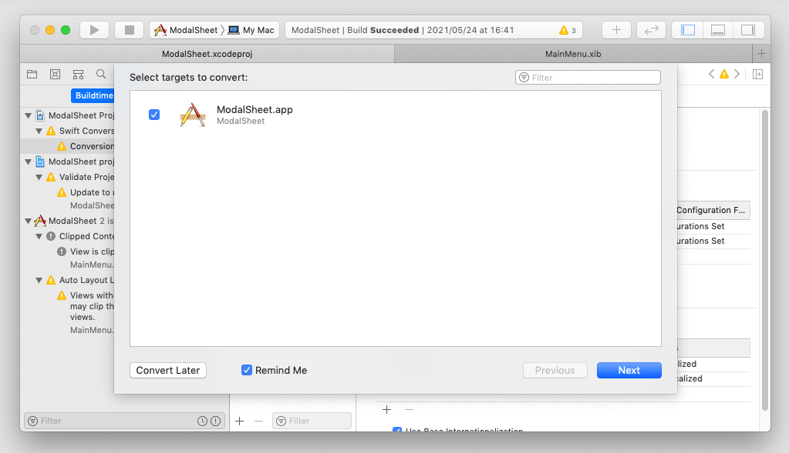

2021/5/31
今更ながらOSをバージョンアップした（Mojave）
Sierra 10.12.6 → Mojava 10.14.6
OSインストール手順
AppStoreから macOS Mojava のインストーラをダウンロードする。最新版以前のバージョンんはここからダウンロードする。https://support.apple.com/ja-jp/HT211683
バージョンアップをずっと怠っていたらバージョンアップができなくなっていた。2019年10月25日に証明書の有効期限が切れたため（！）、「このMacOS Mojaveインストールアプリケーションは破損しているため、macOSのインストールには使用できません」のメッセージが出てインストーラが起動しない。
対応として、ディスクユーティリティを開き、InstallESDのマウントを解除すればインストールできるようになる（これが何を意味しているのかわからんが、とにかくうまくいく）。インストール自体は１時間足らずで終わる。
Apache/PHPの対応
OSのインストールとともにインストーラにバンドルされているソフトもバージョンアップする。
Apache 2.4.6 → 2.4.41 ( httpd -version )
PHP 7.3.3 → 8.0.6 ( php -v )
PHP7は homebrewでインストールしていたようだ。
MySQLは変わらない
MySQL 5.7.16 ( mysql --version )
Apache の httpd.conf が初期ファイルに置き換わるので今まで使用していたものをバックアップから戻す。ただしPHP8のモジュールをロードする部分は次のように修正する。
httpd.conf の全文
Apache関連の備忘録
PHPの php.ini もデフォルトに置き替わるので元に戻す。
ファイルの格納場所が /usr/local/etc/php/8.0 に変わる。ディレクトリ「8.0」を作成し、iniファイルをコピーする。PHPが iniファイルを読み込めたら phpInfoに "Loaded Configuration File”が表示される。
PHP備忘録
Xcodeのバージョンアップ 9.2 → 11.3.1
Swift 4 → 5.1.3
Apple の Developerサイトから、Xcode 11.3.1のインストーラをダウンロードし、起動する。https://developer.apple.com/download/more/
Swiftもバージョンアップする。
以前の環境（Xcode9/Swift4）で作成したプロジェクトはそのままビルドし実行もできるが、最新の環境に合わせて必要な変更を行うことが原則的には必要である。
Xcodeで古いプロジェクトを開くと、次のような警告が表示される。コードをSwift5向けに変換すること、プロジェクトの設定を新しい環境に合わせてアップデートすることを勧めている。表示された警告をクリックするとXcodeが変更作業を自動的に行なってくれるので非常に楽である。
(１) ソースコードを変換する
Xcodeはコード変換が必要な箇所を修正前後のコードを並べて表示してくれるので、中身を確認しながら進めることができる。

![[versionUp6]](/lib/HTMLofImage.html?filename=/data/89/versionUp6.png&title=versionUp6&width=800)
(２) プロジェクトの設定を変更する
内容はよくわからないが、Xcodeに任せて実行ボタンを押すだけで良いと思う。
(3) ビューのAutoLayoutで警告が出るようになった
警告は、制約のないビューであるというような意味である。Layoutを Automaticから translate Mask Into Constraintsに変えれば消える。理由はよくわからない。
(3) 実行時、Metal API validation Enabled というメッセージが出る
Metalを使用していないにも拘らず余計な処理が実行されていると思われる。Xcodeスキーマのオプション・GPU Frame Captureを Disabledにすれば消える。
Base SDKについて
Base SDKのバージョンを指定する必要がなくなっている。Deployment Targetのバージョンだけを考えれば良いわけで、だいぶ分かりやすくなったと思う。
Appプロジェクト新規作成におけるUIの実装方法
Xcode11になり UIを実装する新しい機能として 「SwiftUI」というものが追加された。ただ、これにより作成したアプリケーションは macOS15以上でなければ動作しないようだ。SDKの機能上、Deployment Targetを10.15にすればビルドまで可能だが、実行はできないということ。UIの実装は従来通り「XIB」を選択すること。
やはり、バージョンアップによる問題が出てきた
2021/6/2
signingの設定によりアプリが動かない
Signingとは、アプリケーションの証明書にかかわる何かで、Signing & Capabikitiesタブで指定する。
アプリを公開するためには、automatically manages signingをYESにする必要があり（憶測）、そのためにはTeamの指定が必要で、Apple Developerへのsign inが必要になる。ただし開発機で開発しているだけなら、どちらの設定でも構わない。
この設定に拘らず 「Signing Certificate」は、「Signing to Run Locally」 にしておかなければビルドは成功しても実行することができない。試行錯誤の結果なので理屈はよくわからない。
この設定はXcode9の時から別の場所にあったのだが、嫌らしいところは、何も触らなければ問題なく動いていたものが、一度何かの設定を変えたところ、全ての設定を正しく行わなければ、よくわからないエラーになってしまうこと。
![[versionUp13]](/lib/HTMLofImage.html?filename=/data/89/versionUp13.png&title=versionUp13&width=800)
2021/6/2
App Sandboxの表示方法がわからなくて迷った
App Sandboxを有効にするには、Signing & Capabikitiesタブの + Capability ボタンをクリックし、AppSandoboxの設定フォームを開く。無効化するにはフォームのはじの x ボタンをクリックする。ON/OFFのスイッチによる切り替えではなくなった。設定内容は変わらず。